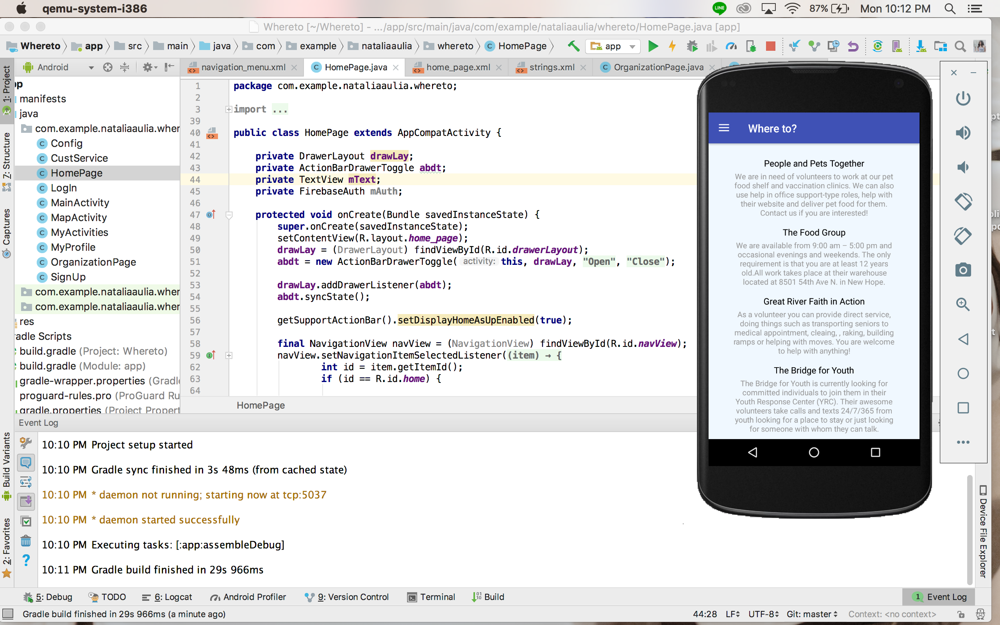
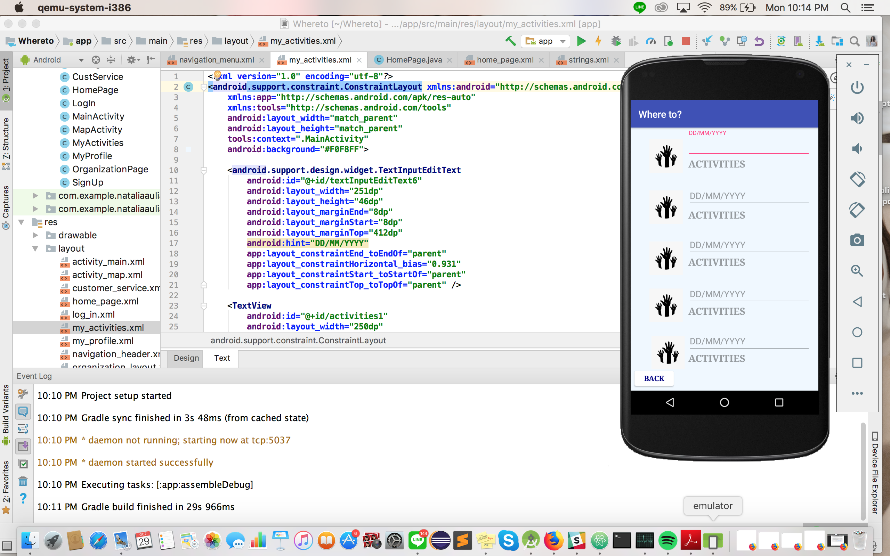
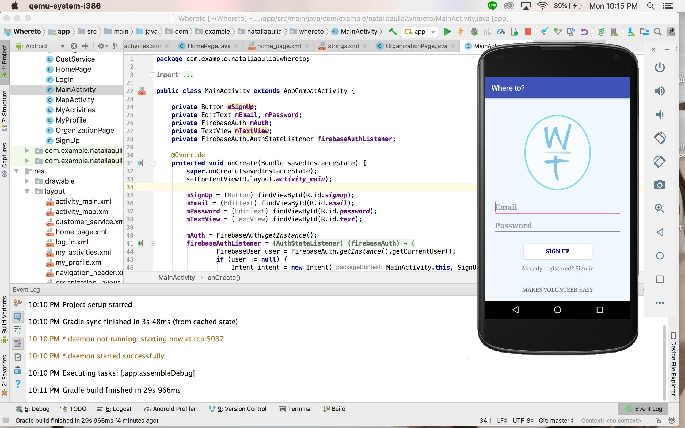
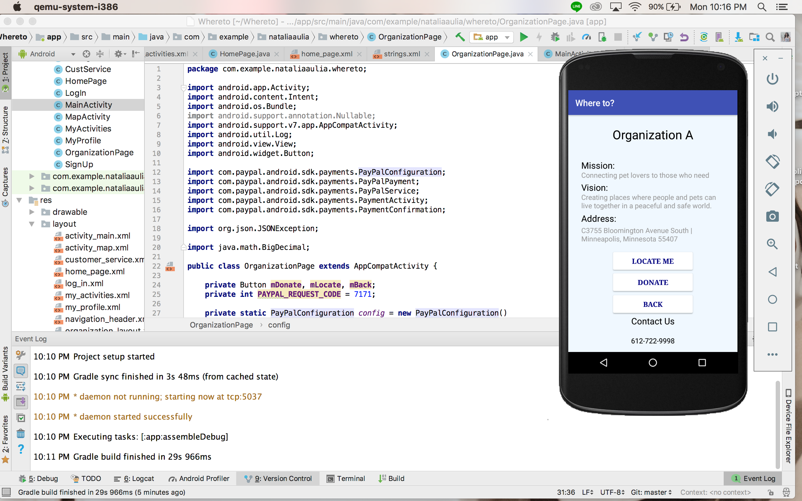
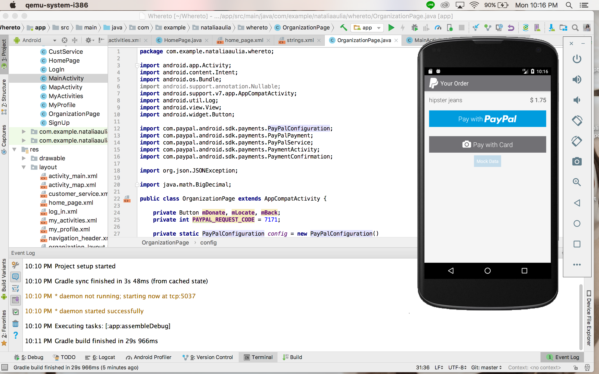
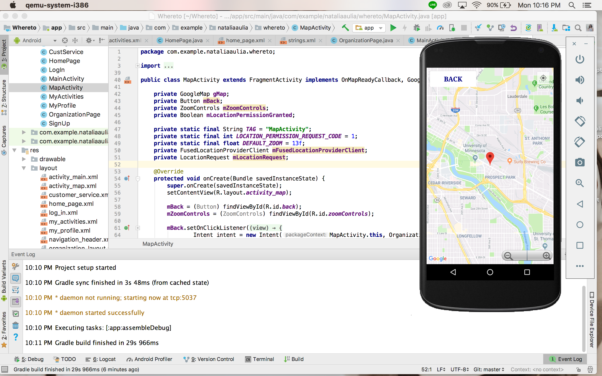
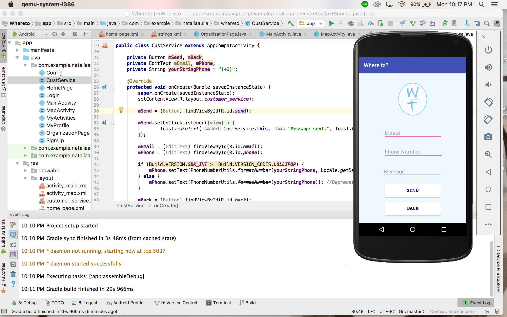
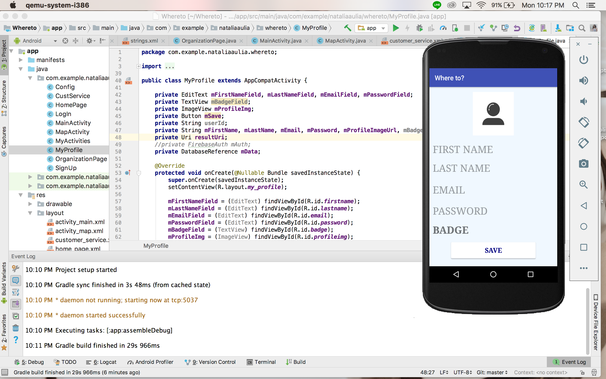

Hello World!
My name is Natalia Aulia and I am a Software Engineer who has a passion for application development. Download my resume below and check out some of the cool projects I have done!
EDUCATION
Bachelor of Science, Computer Science
University of Minnesota-Twin Cities
College of Science & Engineering
Expected Graduation Date: December 2020
Associate of Science, Computer Science
North Seattle College
Cumulative GPA: 3.86/4. President's List
Organization: Student Leadership and ISANS (Indonesian Student Association at North Seattle College)
WORK EXPERIENCE
2017 - 2018
North Seattle College
Mathematics & Computer Science Tutor
I was responsible to assist a community of students to understand better on Mathematics and Computer Science questions, including homework, individual and group projects.
Student Cabinet Board Member
My role was to act as a liaison between students and faculties, where I represent the student’s voices in campus committee meetings. I also took part of faculties’ tenure process and wrote articles for the school’s newsletter.
In the end of the school year, I was also assigned to interview future North Seattle College Student Leaders and selected 30 out of 120 students who had applied.
PROJECTS
Tampons Navigator
Wait, what? Am I hearing right? Tampons Navigator? What does it do? Well I am so grateful you ask.
Inspired by a true story, Tampons Navigator is an Android application that will help direct customers go to a nearby provider or nearby stores to get tampons. My friend and I implemented front-end languages such as XML and CSS to create the User Interface Design and Java as the back-end language, as well as Firebase Console as the database.
Right now, our goal is to implement a chatbot and upload it to Google Playstore by the end of this year.
GitHub: https://github.com/nataliaaulia/TamponsNavigator.git
#dedicatedonlyforyou
travelventures
Hey Natalia, how is it like living in the United States alone? Is it hard being an international student? What do you usually do when you are not studying?
Dedicated for those who want to know what it feels like to study abroad, travelventures is my own *in progress* blog of my journey as an international student in the United States.
Built with front-end languages such as HTML5/CSS3 and a lot of Bootstrap as well Javascript, this blog is dedicated to show my creative side to the world while telling my journey as a programmer.
Stay tuned for more info!
- 

- 
- 
- 
- 
- 
- 
- 
Where to?
How many of us agree that finding a volunteer and donation opportunities that fits us best and is also near our location is hard?
Where to is an Android application, which is created to promote civic engagement and also to help people to find volunteer and donation opportunities near them. It is also created to help non-profit organizations attract volunteers and donators easier.
Right now the application is only created for the people who search for volunteer opportunities but stay tuned for the organization's application side!


Interested to do a project with me? Or if you just want to chat or buy me a cup of coffee, perhaps?
Please email me at:
aulia001@umn.edu